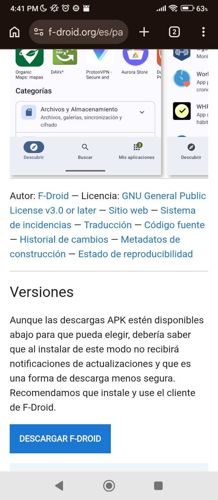
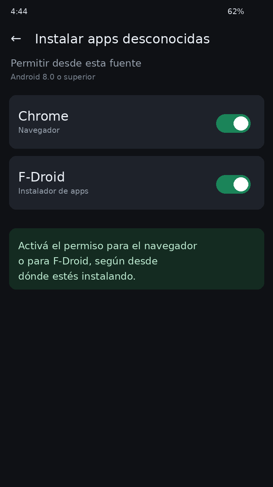
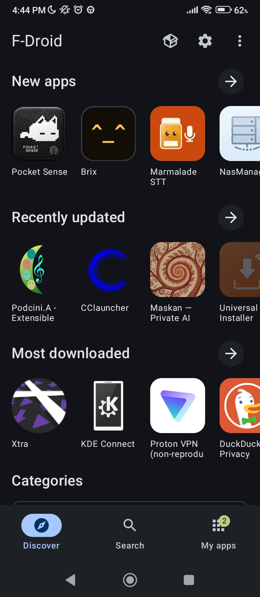
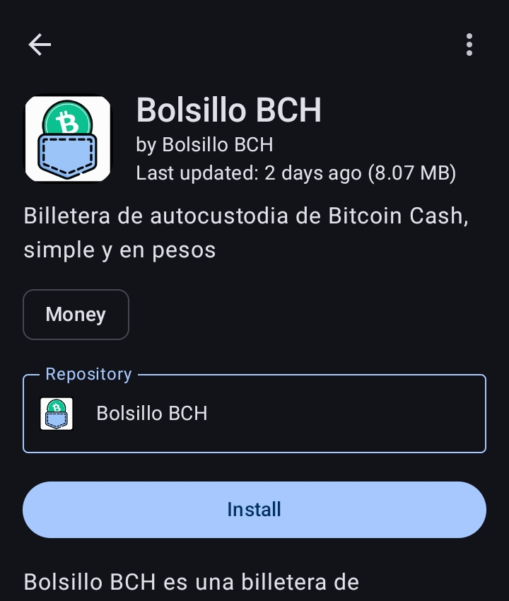
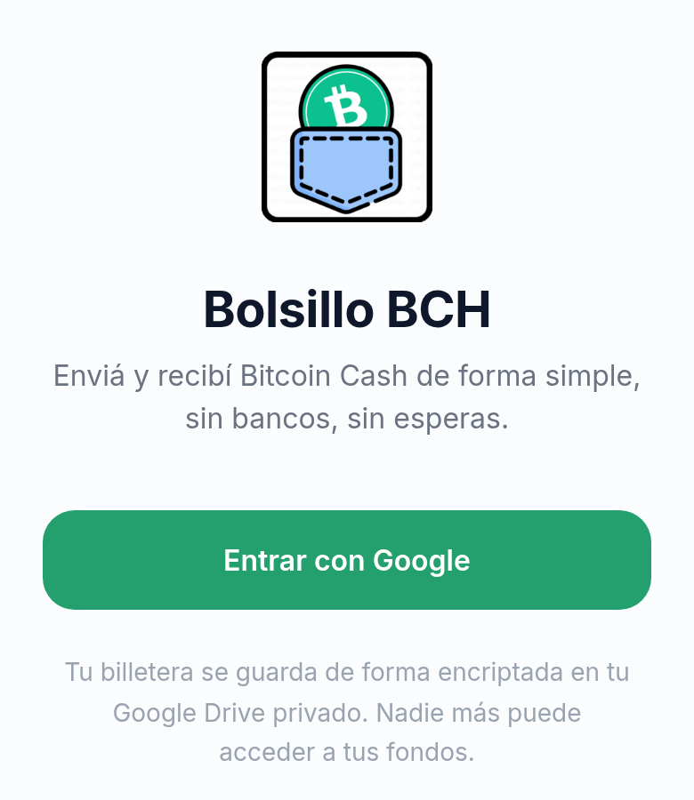
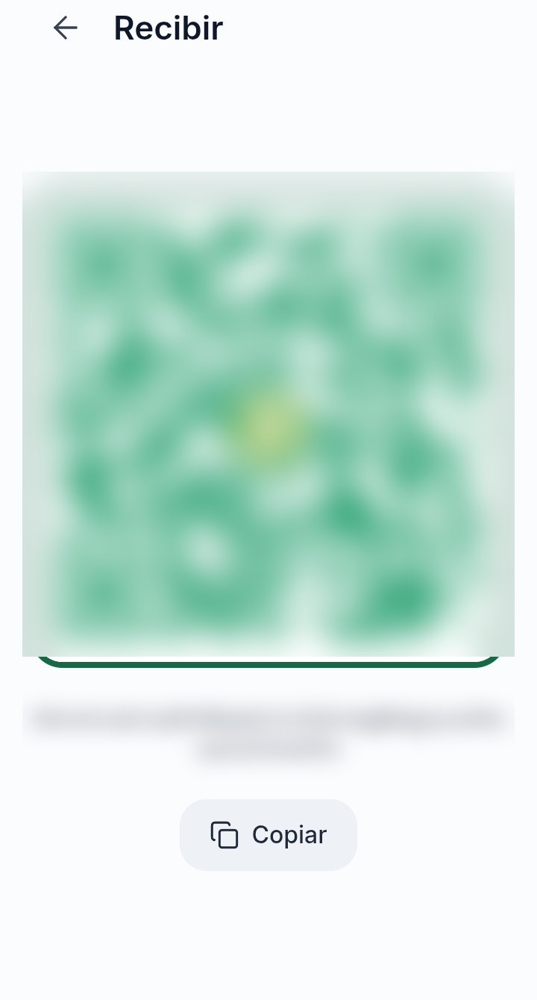
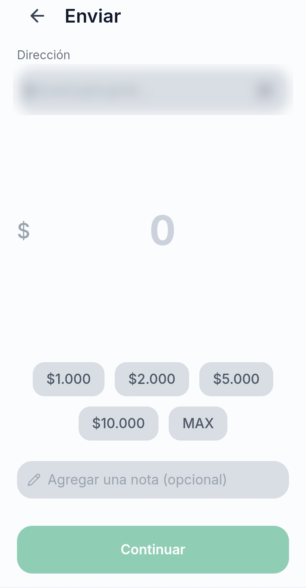
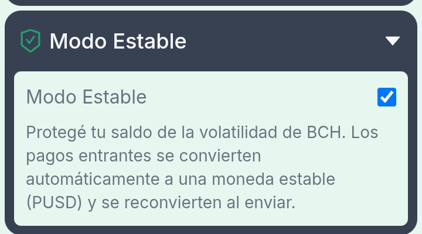
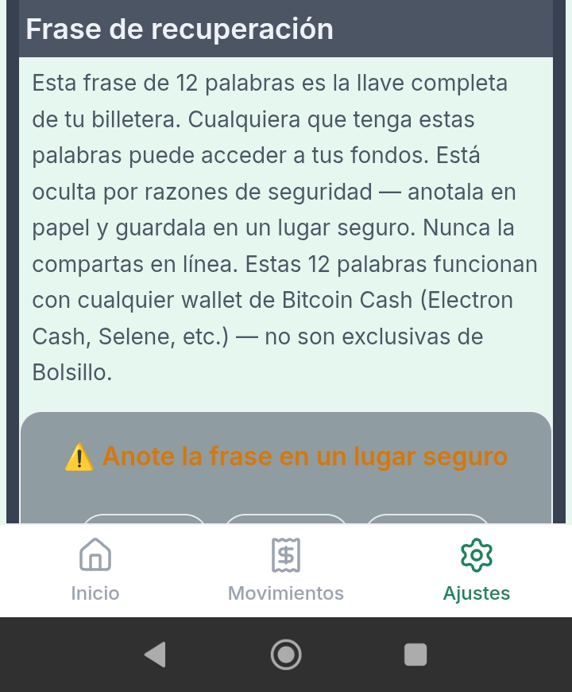

Bolsillo es una billetera de autocustodia: las claves de tu dinero viven en tu teléfono, no en un servidor nuestro. Vos sos el dueño.
Necesitás
Un teléfono Android 8.0 o superior.
Conexión a internet.
Una cuenta de Google (para el respaldo automático).
10 minutos y un lugar seguro para anotar 12 palabras.
Qué vas a instalar
F-Droid: una tienda de apps libres, sin cuenta ni publicidad.
Bolsillo BCH: la billetera, desde el repositorio oficial.
Contenido
1Instalar F-Droid
2Agregar el repositorio de Bolsillo
3Instalar y entrar
4Recibir y enviar
5Modo Estable
6Respaldo y recuperación
7Preguntas frecuentes
8Seguridad
1
Instalar F-Droid
La tienda desde donde vas a instalar Bolsillo.
Abrí el navegador del teléfono y entrá a f-droid.org.
Tocá el botón para descargar F-Droid (archivo APK).
Cuando Android pregunte, permití instalar apps desde el navegador. El camino exacto depende de la versión: Ajustes → Apps → Acceso especial → Instalar apps desconocidas.
Si Play Protect muestra un aviso, elegí “Instalar de todos modos”. F-Droid es una app libre y conocida; el aviso es porque no viene de Play Store.
Abrí F-Droid.

Descargá F-Droid solo desde f-droid.org.

Ejemplo: activá el permiso para el navegador o F-Droid.
2
Agregar el repositorio de Bolsillo
F-Droid necesita saber dónde está la app.

El ícono de la caja (al lado del engranaje) abre Repositorios.
En F-Droid, tocá el ícono de la caja (Repositorios), al lado del engranaje.
Dentro de Repositorios, tocá el +.
Elegí Escanear QR y apuntá al código de abajo. También podés pegar la URL.
Verificá que la huella coincida y guardá.
Volvé a la pantalla principal y actualizá el repositorio.
URL del repositorio https://vulkan0n.github.io/fdroid/repo/
Si el QR no funciona
En el campo de URL pegá https://vulkan0n.github.io/fdroid/repo/?fingerprint=9B643059F7466EDC9F290B151FA7D1EDAA61A9CB31A8A2744509CF804EC6289B. La huella evita que agregues un repositorio falso.
Capturas en inglés
Las capturas de F-Droid están en inglés. En un teléfono en español, los botones son Repositorios, Escanear QR e Instalar.
3
Instalar y entrar
Instalá Bolsillo y creá tu billetera con Google.
Instalar Bolsillo BCH

F-Droid → Bolsillo BCH → Instalar.
Volvé a F-Droid y esperá a que actualice.
Buscá “Bolsillo BCH”.
Tocá Instalar.
Permití a F-Droid instalar apps.
Cuando termine, tocá Abrir.
Crear tu billetera

“Entrar con Google” crea y respalda tu billetera.
Tocá “Entrar con Google”.
Elegí la cuenta que vas a usar siempre.
Bolsillo crea la billetera y la respalda en tu Drive.
Andá a Ajustes → Seguridad → Frase de recuperación y anotá las 12 palabras.
Configurá un PIN en Ajustes → Seguridad.
Qué ve Google
Bolsillo solo accede a la carpeta privada de la app (drive.appdata), no al resto de tu Drive. El archivo de respaldo está cifrado.
No compartas las 12 palabras
Cualquiera que las tenga puede vaciar la billetera. No las saques en fotos, no las mandes por WhatsApp y no las escribas en sitios web. Si alguien te las pide diciendo que es “soporte de Bolsillo”, es una estafa.
4
Recibir y enviar
Cobrar y pagar con Bitcoin Cash.
Recibir

Inicio → Recibir.
En Inicio, tocá Recibir.
Mostrá el código QR o copiá la dirección.
Compartila con quien te va a pagar.
Esperá la confirmación; el saldo se actualiza solo.
Enviar

Inicio → Enviar.
En Inicio, tocá Enviar.
Escaneá el QR o pegá la dirección.
Escribí el monto en pesos o BCH.
Revisá la dirección y el monto.
Confirmá con PIN.
Solo Bitcoin Cash
La dirección es de la red Bitcoin Cash (BCH). No la uses para Bitcoin (BTC) ni otras redes.
Las transacciones no se revierten
Verificá la dirección y el monto antes de confirmar. Si es la primera vez que le pagás a alguien, empezá con un monto chico.
5
Modo Estable
Protegé tu saldo de la volatilidad del BCH.
Andá a Ajustes → Modo Estable.
Activá el interruptor y confirmá.
Bolsillo convierte tu saldo de BCH a PUSD, una moneda estable, dejando una reserva del 1% en BCH para comisiones.
Para desactivarlo, apagá el interruptor. Bolsillo vuelve a convertir el PUSD a BCH.
Qué es PUSD
PUSD es una moneda estable emitida como token sobre Bitcoin Cash. Su objetivo es mantener un valor cercano al dólar. No es un depósito bancario ni está garantizada por un banco.
Necesita internet y puede tener comisiones
El cambio se hace contra un exchange descentralizado (Cauldron). Si la red o el servicio no están disponibles, el saldo puede quedar temporalmente en BCH o PUSD. Cada conversión paga la comisión de la red.

Ajustes → Modo Estable.
6
Respaldo y recuperación
Dos respaldos: Google Drive y las 12 palabras.
Respaldo automático en Drive
Cuando creás la billetera, Bolsillo guarda una copia cifrada en la carpeta privada de la app en tu cuenta de Google. Se actualiza con el uso normal.
Para restaurar en un teléfono nuevo: instalá Bolsillo, tocá “Entrar con Google” y usá la misma cuenta.
Cada cuenta de Google tiene su propia billetera. Si entrás con otra cuenta, vas a ver otra billetera (o una vacía).
Las 12 palabras
Son la llave maestra. Sirven para recuperar la billetera en cualquier app compatible con Bitcoin Cash, aunque pierdas el teléfono o la cuenta de Google.
Anotalas en papel, en orden, sin errores.
Guardalas en un lugar seguro y seco.
No las compartas con nadie.
Dónde estánAjustes → Seguridad → Frase de recuperación. La app puede pedirte PIN antes de mostrarlas.
Si desinstalás la app
La billetera no se borra de la red: sigue en tu respaldo de Drive y en tus 12 palabras. Para volver, reinstalá Bolsillo y entrá con la misma cuenta de Google.

Anotá las 12 palabras en papel.
7
Preguntas frecuentes
Lo que suele pasar en la instalación y el uso.
No aparece el repositorio o no encuentra Bolsillo
En F-Droid, entrá a Ajustes → Repositorios, verificá que el repositorio de Bolsillo esté ahí y actualizalo. Si no está, agregalo de nuevo con el QR de esta guía.
Error al actualizar el repositorio
Tocá de nuevo “Actualizar”. Si sigue, quitá el repositorio y agregalo otra vez con el QR. Verificá que la huella coincida con la de esta guía.
Android no me deja instalar la app
Falta el permiso de “instalar apps desconocidas”. En Android 8 o superior se da por app: Ajustes → Apps → Acceso especial → Instalar apps desconocidas y habilitá el navegador (para F-Droid) o F-Droid (para Bolsillo).
El login con Google falla
Revisá la conexión, actualizá Bolsillo desde F-Droid y probá de nuevo. Si el error menciona “developer error”, la app está desactualizada o el cliente OAuth no está disponible: escribinos a superbchat.cash@gmail.com.
¿Bolsillo puede ver o tocar mis fondos?
No. Es una billetera de autocustodia: las claves se generan y se guardan en tu teléfono. Nosotros no tenemos acceso a tus fondos ni a tu frase semilla.
¿Es gratis?
Sí. Bolsillo no cobra comisión por usarla. Solo pagás la comisión de la red Bitcoin Cash cuando enviás o convertís, y las comisiones del exchange si usás Modo Estable.
¿Qué pasa si pierdo el teléfono?
Instalá Bolsillo en otro teléfono y entrá con la misma cuenta de Google para restaurar desde el respaldo. Si no tenés la cuenta, usá las 12 palabras.
¿Puedo usar la app sin Google?
Esta versión usa Google para el respaldo automático. Las 12 palabras siguen siendo tu respaldo manual y funcionan en cualquier billetera compatible con Bitcoin Cash.
8
Seguridad
Reglas simples que evitan casi todos los problemas.
Hacé
Anotá las 12 palabras en papel.
Usá PIN.
Verificá la huella del repositorio antes de agregarlo.
Descargá F-Droid solo desde f-droid.org.
Mantené el teléfono actualizado.
No hagas
No compartas las 12 palabras.
No las saques en fotos ni las mandes por chat.
No instales Bolsillo desde links de terceros.
No confíes en “soporte” que te escribe primero.
No pagues a alguien que no conocés sin verificar.
Regla de oro
Si alguien tiene tus 12 palabras, tiene tus fondos. No hay banco, soporte ni “recuperación de cuenta” que pueda evitarlo. Guardalas como guardarías la llave de tu casa.
Repositorio oficial https://vulkan0n.github.io/fdroid/repo/
Política de privacidad https://vulkan0n.github.io/bolsillo-bch-site/